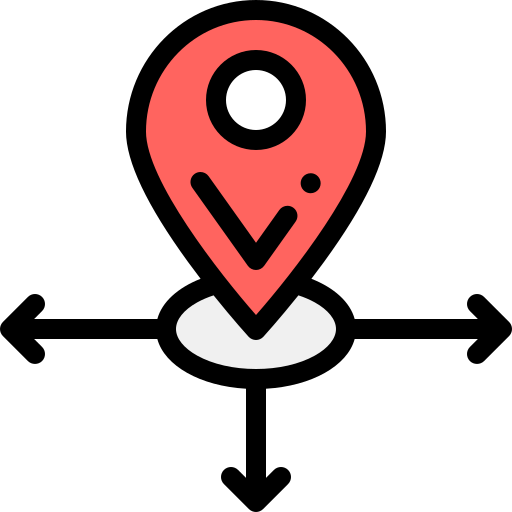
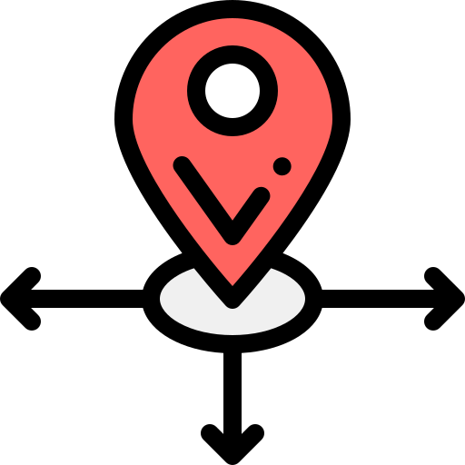

FARMACIA DE GUARDIA
TENEMOS TODO LO QUE NECESITES
PharmaGuardia es un proyecto donde se facilita al usuario la busquedad de
farmacias de guardia, según la zona que desee. Lo que buscamos es que el
usuario de nuestra aplicación en cualquier caso o situación que se
encuentre pueda encontrar de manera rápida y eficaz. Muchos seguramente
después de estar en urgencias por la noche piensan..
“Que faena buscar una
farmacia de guardia” pues con nuestra aplicación facilitamos esto, el
usuario a través de la geolocalización, y otras formas, podrá encontrar la
farmacia mas cercana y la ruta que debe utilizar. También nos gustaría
añadir que el usuario pueda dar “confianza” a un farmacia. Esta farmacia de
confianza es la que cualquier usuario use frecuentemente y donde tendrá
contacto directo con esta, para saber si por ejemplo ya le aparecen sus
medicamentos mensuales y no se tenga que desplazar innecesariamente.
Es un proyecto enfocado ayudar plenamente al usuario facilitando cualquier
gestión que tengan entre su Centro de Salud y la Farmacia.
BUSCA NUESTRA FARMACIA
 Código Postal
Geolocalización
Via Mapa
Código Postal
Geolocalización
Via Mapa